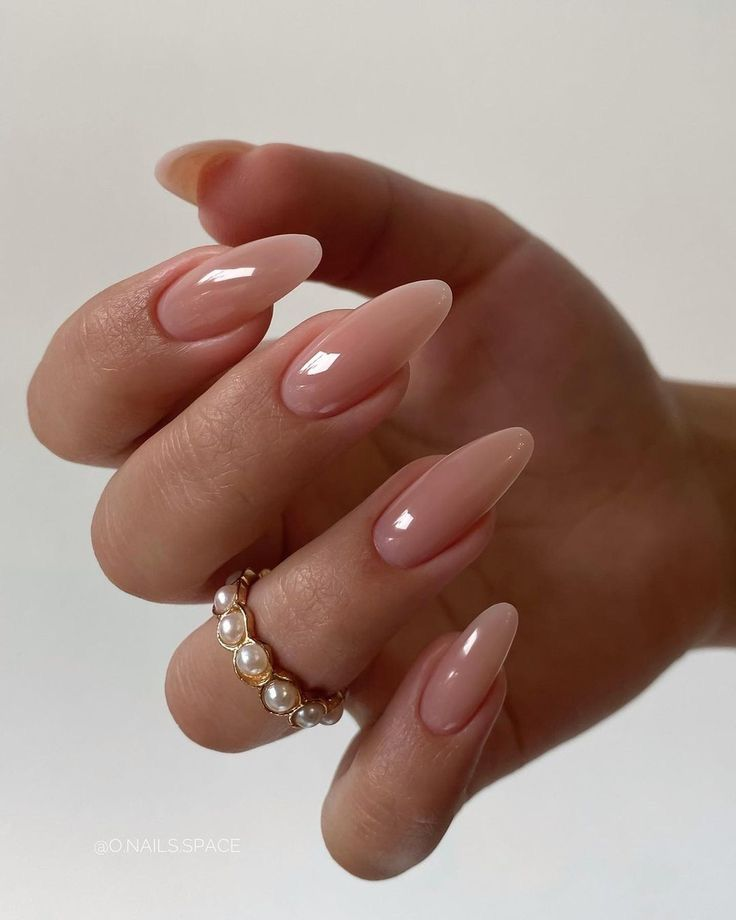
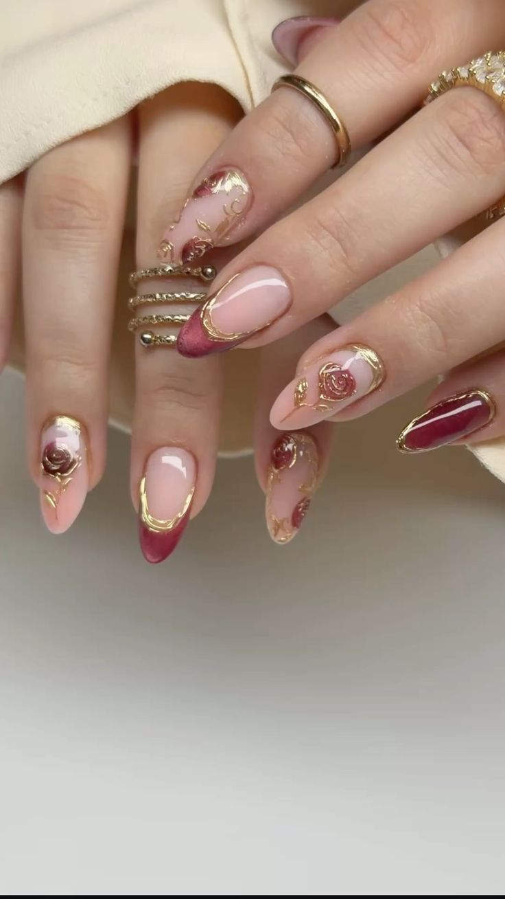
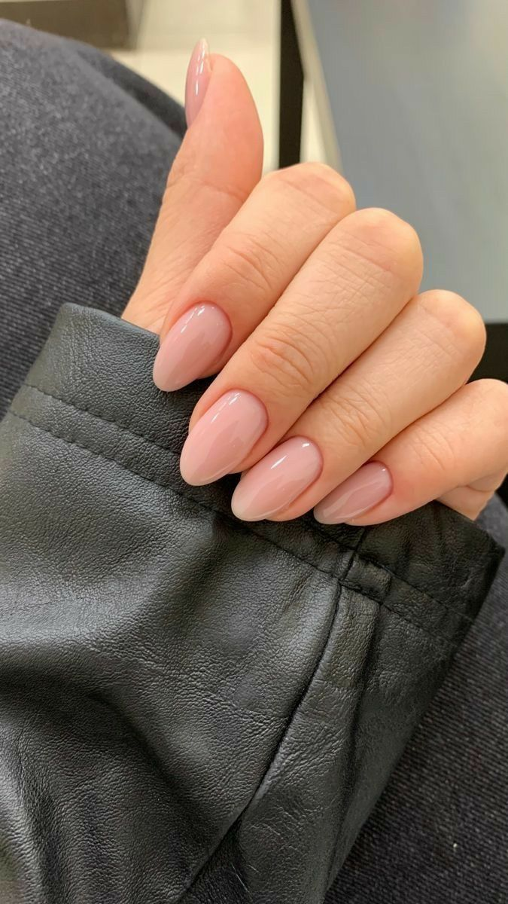
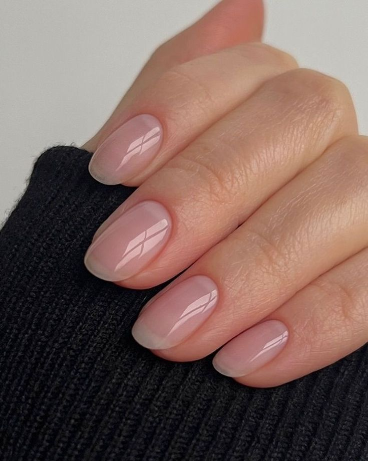

Kalıcı oje, protez tırnak ve nail art ile tarzınızı yansıtın.




| Hizmet | Süre (Ortalama) | Kalıcılık |
|---|---|---|
| Protez Tırnak (Yeni Set) | 120 Dakika | 4 Hafta |
| Kalıcı Oje + Manikür | 60 Dakika | 3 Hafta |
| Jel Bakım (Alt Dolgu) | 90 Dakika | 3-4 Hafta |
Parmakları daha uzun ve ince gösteren en popüler form.
Modern ve güçlü bir görünüm arayanlar için klasik.
Cesur, uzun ve gösterişli tırnakların tercihi.